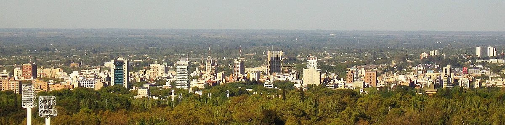
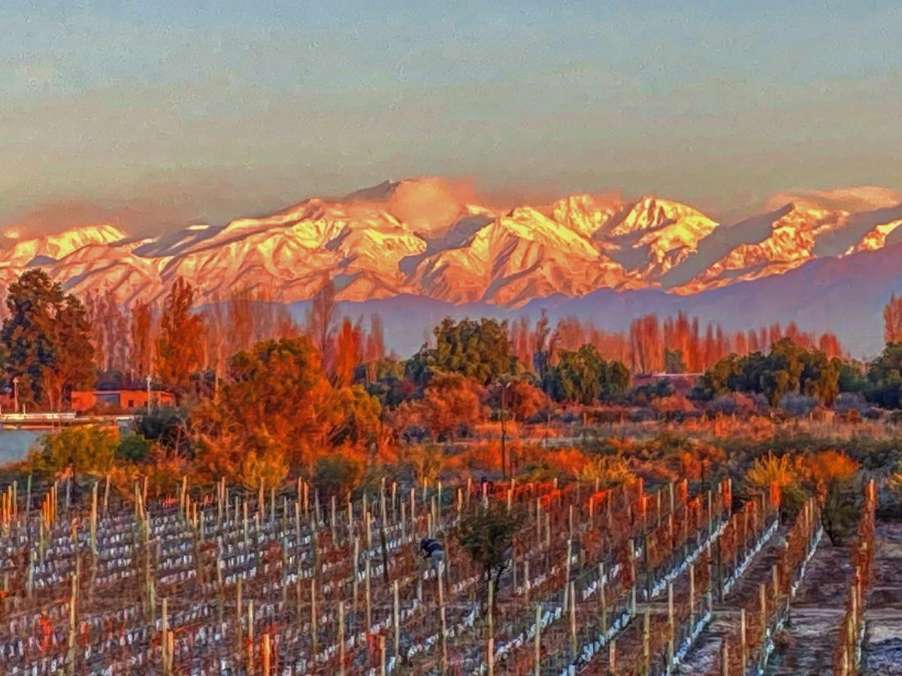
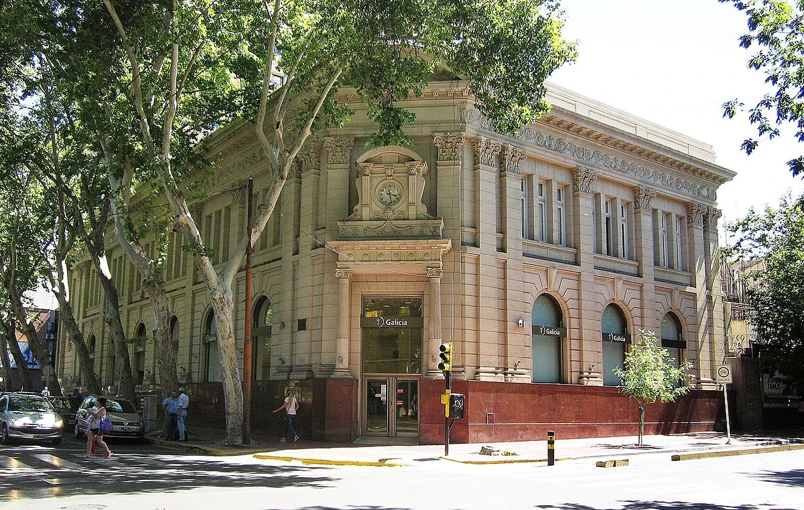
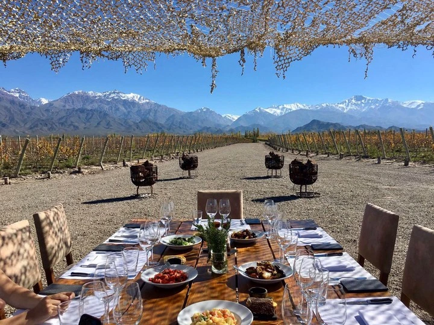
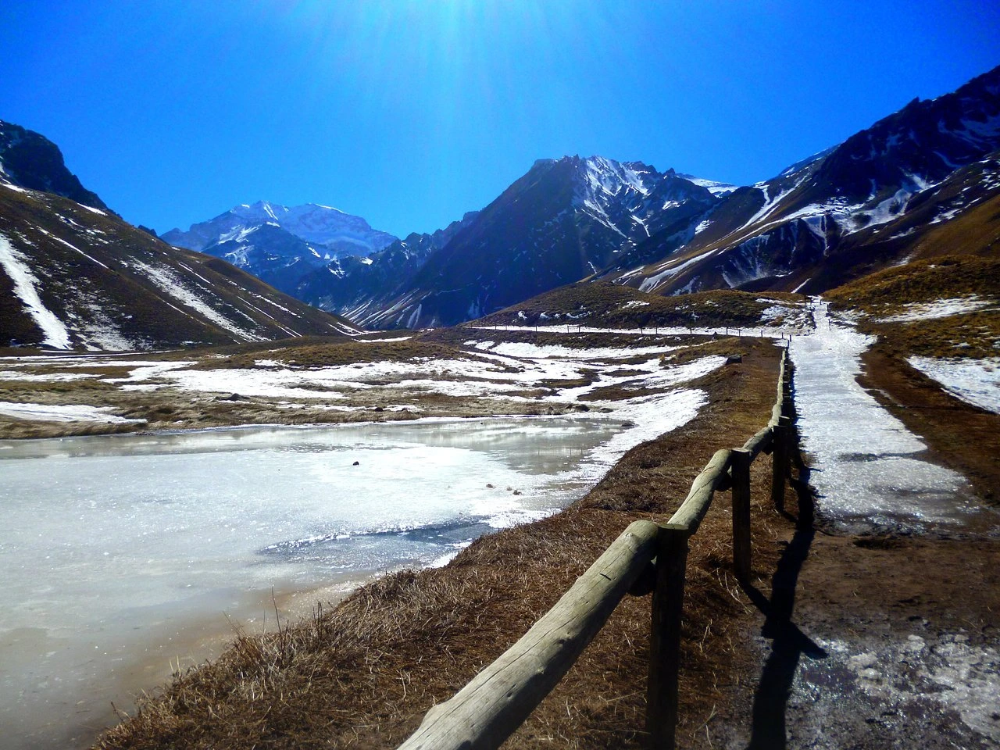
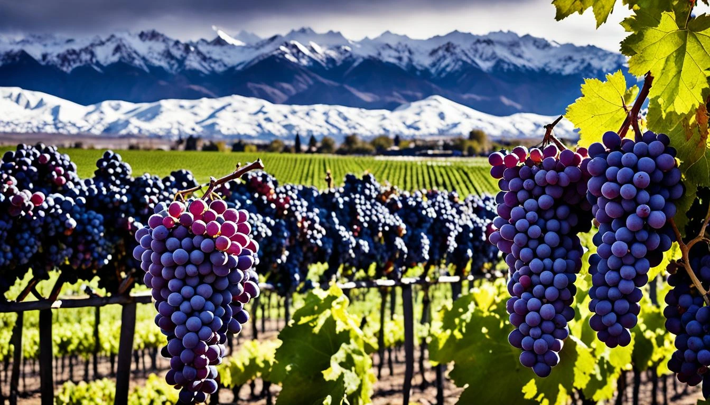

It is located on the plain east of the Andes mountain range.
It is one of the main cities in the country, and with its urban agglomeration, called Greater Mendoza, it reaches a total population of over one million inhabitants.
Economic activity is linked to trade, the service industry and mainly tourism activity around the wine industry, which is why, along with other cities in the world, it is called the world capital of wine.
Climate
Temperatures fluctuate widely from year to year and rainfall is scarce.
Summer is hot and humid, it is the rainiest season and average temperatures are above 25 °C;sudden summer storms with abundant rainfall and even hail are common during this season..
Winter is cold and drier, with average temperatures below 8 °C, periodic night frosts and scarce rainfall..
In the city centre there is no snowfall, this being strictly in the city, since the strong heat island raises the minimum temperature by several degrees;.
Festivities
The city of Mendoza is the epicenter of the most important activities of the National Grape Harvest Festival, an annual festival that celebrates the grape harvest, obtained to make wine.
The White Way of the Queens, held on the Friday night before the Central Act (epicenter of the grape harvest festivities) and the Carousel that takes place throughout the following morning, constitute parades of allegorical floats each commanded by the candidate to the grape harvest throne of each Mendoza department, a parade of invited floats, gaucho groups from the province, invited groups and other attractions through the central streets of the city.
The Central Act, held at the Frank Romero Day Greek Theater, built on the slopes of the Cerro de la Gloria, which is in turn in the General San Martín Park, is one of the largest open-air popular festivals in the world, and consists of an allegorical theatrical work with a staging of thousands of artists (including set designers, designers, dancers, actors, musicians, etc.). The Central Act is reproduced on the following nights, but this show is complemented by the presence of national and international artistic numbers.

City Mendoza - Argentina.

Autumn in Valle de Uco.

Bank of the city

Bodega Mendocina

Mountain - Cordillera de los Andes

wine